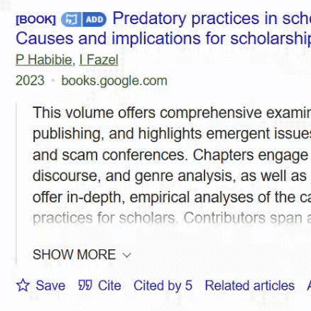
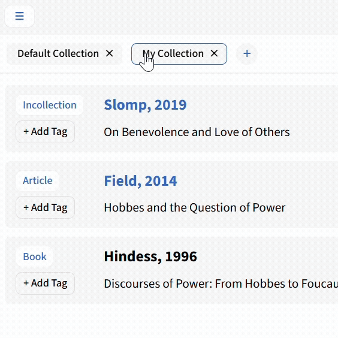
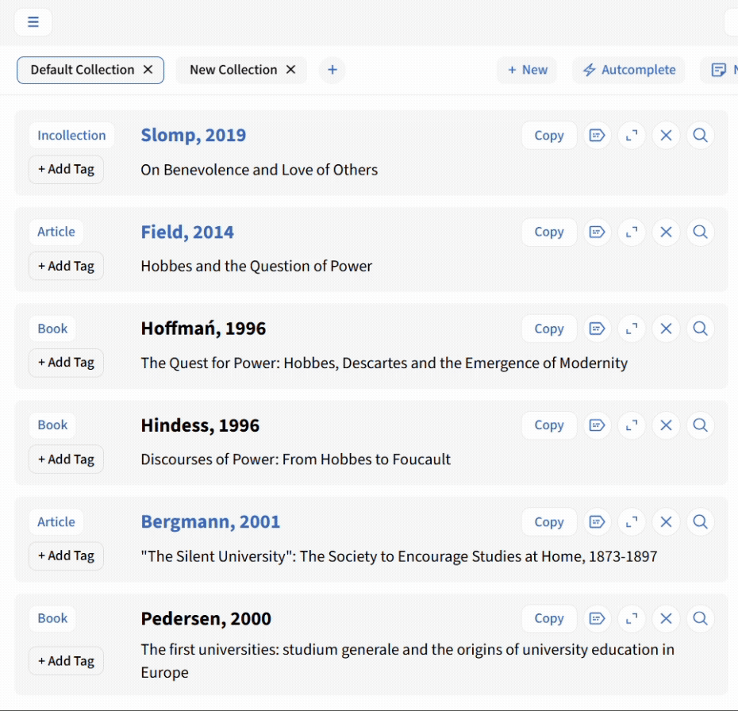
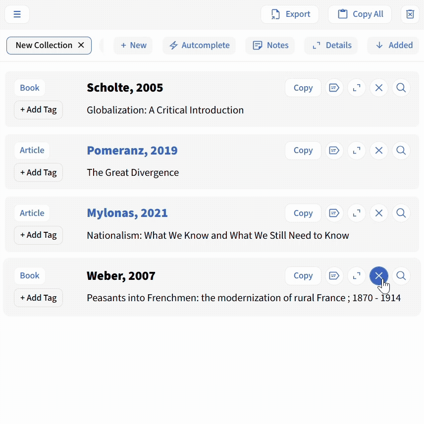

RefMate is a browser extension for collecting and organising academic references directly in your browser. Capture references with one click while searching, resolve any identifier you come across, check availability and edit metadata - everything in one place. Once you're ready, export everything to your reference manager.
Questions? Troubles?
Please let me know
Collecting References
The core functionality of RefMate is collecting references. You can access this in two ways:

Quick Capture Button
The button works especially on search engines and is optimised for a number of websites and link types.
Context Menu Access
RefMate can also resolve any DOI or ISBN anywhere, using the context menu. Select the identifier, right-click, and choose .
is optimised to work on search engines and four repositories (HAL, JSTOR, CyberLeninka and arXiv). It can also generally recognise links from publisher and aggregator pages and resolve identifiers, but this is not manually optimised and may produce inconsistent results.
 Very Complete
Very Complete Mostly Complete
Mostly Complete Frequently Incomplete
Frequently Incomplete
- The global toggle turns it off everywhere, including on search engines.
- The identifier toggle takes effect everywhere except on search engines.
- Site-specific toggles apply only to those pages and do not affect search engines.
Search Engines
RefMate is fully optimised for three academic search engines: Google Scholar, OpenAlex, and Scopus. On these pages, reliably retrieves the most complete metadata available for a given entry.
The button appears next to entries that contain an identifier. It retrieves more complete data than Google Scholar's own BibTeX export and includes the document link. You can also add any entry independently by right-clicking on Import into BibTeX and selecting .
On Google Scholar, RefMate relies on various disparate sources to work together. At times this may lead to issues - here's how to solve them:
»RefMate requests permission to access a site.«
RefMate avoids site-specific permissions where possible and comes with relevant publisher and repository pages whitelisted. Occasionally, a host permission is needed to process a URL. Any outstanding permissions are listed at the bottom of , where you can grant them.
»Some entries are missing the Quick Capture button.«
Activate Show links to import citations into BibTeX in your Google Scholar settings under Bibliography Manager.
»Links to JSTOR, Project Muse and other pages produce error notifications.«
Bot protection may block background tabs from loading the target site. Open the page manually and complete any captchas or verifications. Avoid using VPN or Private Relay. For JSTOR, make sure you are logged in.
RefMate retrieves metadata from OpenAlex via the OpenAlex API. You can add references by right-clicking any entry in the search results and selecting , or using the button that appears next to each entry.
RefMate works with all OpenAlex links that contain an ID, such as:
- https://openalex.org/W4411647848
- W4411647848
RefMate extracts the Scopus ID from publication URLs and retrieves structured metadata directly from the Scopus gateway API. It then converts the JSON payload into a clean BibTeX entry, including fields like authors, journal, year, volume, pages, DOI, and abstract.
Repositories
In order to work reliably on search engines, RefMate is finetuned for a number of repositories and major publishers. For four major repositories, is optimised to work directly on the repository site.
Additionally, for a number of publisher and aggregator pages frequently listed on Google Scholar, RefMate extracts and resolves links: OUP, MDPI, Nature, Project MUSE, ScienceDirect, Google Books, and OAPEN - resolving full citations via Crossref or the ISBN search system. When links to these pages appear on Google Scholar, RefMate shows the button. You can toggle this per platform in Settings.
RefMate retrieves metadata from HAL Open Science by fetching the BibTeX entry provided by HAL's built-in BibTeX export. You can add a reference by right-clicking on any HAL page link containing a HAL-ID and selecting . If you have enabled, the button appears next to the title of the HAL entry.
RefMate works with HAL URLs and HAL IDs, such as:
- https://hal.science/hal-01390889v1
- hal-01390889v1
RefMate works with any JSTOR stable link. The button appears next to the title of a given JSTOR entry, on entry pages and in the search results. Alternatively, you can select any JSTOR stable link, right-click to open the context menu, and click . All metadata is directly collected from JSTOR.
Note on DOIs and JSTOR
Not all JSTOR entries have a registered, functional DOI, however all JSTOR entries have a DOI assigned in their page source. JSTOR apparently performs its own validation before displaying a DOI on the article page, suppressing those that are not verifiably registered. RefMate, however, fetches metadata directly from the page source. As a result, the exported BibTeX may include a non-functional DOI.
In practice this is rarely a problem: since all JSTOR entries are captured with their stable URL, the Source link in the history view will always point directly to the article, making DOI resolution redundant for access purposes. The respective JSTOR entries are always flagged as open, so you can access them by clicking on the author name directly rather than resolving access via the identifier. Be aware, however, that the DOI field in JSTOR entries should be treated with caution.
RefMate extracts citation data from CyberLeninka.ru article pages by scraping metadata tags or DOM content directly from CyberLeninka. When resolving CyberLeninka links from Google Scholar, or from the search results on CyberLeninka, RefMate temporarily opens the link in a background tab to collect data, then closes it automatically. When you're already on CyberLeninka, it extracts data directly from the current page.
On arXiv, the button is accessible in the page header and the citation section of a given paper. Metadata is retrieved directly from arXiv. You can also select the arXiv link or arXiv ID and add entries via the context menu:
- https://arxiv.org/abs/2507.12614
- https://arxiv.org/pdf/2507.12614
- arXiv:2507.12614
Identifiers & Manual Entries
RefMate resolves DOIs and ISBNs. For sources without identifiers, you can create manual BibTeX entries directly in the workspace.
DOIs are resolved via the Crossref REST API and ISBNs across K10Plus, Library Hub Discover, and Open Library. It also draws on data directly provided by repositories and search engines. Data quality varies by source: DOI lookups typically yield the most complete records, with ISBN being most reliable for books and monographs.
Click the button next to an identifier (DOI or ISBN) to collect the reference. If you have turned off the button or if it does not appear, select the identifier, right-click to open the context menu, and click .
Use a clean DOI, a valid DOI link, or a publisher link containing a full DOI:
- 10.1080/01436599408420398
- http://doi.org/10.1080/01436599408420398
- http://www.tandfonline.com/doi/full/10.1080/01436599408420398
Use ISBN-13 or ISBN-10:
- 9780691161396
- 0195050010
If multiple ISBNs are given for the same book, try the ISBN-13 first.
In the workspace, click the button to create a blank BibTeX entry. You can choose from common templates (article, book, book chapter, etc.) and edit it immediately or use autocomplete to add metadata based on identifiers.
Workspace
The workspace is where you organise and manage your collected references. Arrange entries in collections, edit metadata with the overlay, sort and export to BibTeX, RIS, or printable bibliographies.
RefMate organises references in collections. New entries are always added to the collection tab you had last opened.

Renaming Collections
To rename a collection, click, select and hold its tab title, then type the new name and release. All entries in that collection automatically update to reflect the new name.

Moving Entries between Collections
To move entries, hold Ctrl/Cmd and click to select multiple entries, then drag any selected header onto the target collection tab.
To move a single entry, either drag and drop it or, change the RefCollection = field in the BibTeX and refresh the page.
Collection Field
When copying entries to your clipboard or using the export feature, RefMate always includes the active collection name as a proprietary BibTeX field. When exporting or bulk-copying, you can chose to have proprietary fields removed.
You can edit, copy, and delete entries, with all changes saved automatically. If the BibTeX of an entry contains url = {...}, that URL will be added to the entry title as a clickable link, unless for books as metadata retrieved via SRU usually does not contain any full-text links. Note that this may not be the only or most current URL where the source is available, as accuracy depends on the original data provider. Regarding access options, see Full-Text Search below.

Deleting Entries
You can delete all collections and entries using the button in the top right corner. Furthermore, you can delete single entries by clicking on the respective button in the entry header, delete selected items by selecting and using the button in the top right corner and delete collections by using the button in right corner of a collection tab.
Storage
RefMate stores entries in the browser cache, and is thus not suitable for long-term storage of references. Entries may be deleted upon some browser or extension updates, or when clearing the browser data.
Use the button to cycle through sorting modes: by date added, author name, or publication year, in ascending or descending order. The current sort mode is displayed next to the icon.
When editing entries, you can work with either plain BibTeX code or use the editing overlay for the metadata panel, which helps prevent formatting errors. By default, RefMate uses the overlay. For individual entries, you can open the BibTeX by clicking on the button in the right corner of the metadata panel. To permanently switch to the BibTeX view, navigate to and then Display & Notifications. The overlay provides input fields for each BibTeX field, along with the following action buttons:
- - converts author/editor names to "Last, First" format
- / - changes the case of title fields
- - removes a field entirely
- - quickly add commonly used fields (volume, pages, DOI, etc.)
RefMate lets you convert the entry type between Journal Articles, Monographs, Book Sections, and others. Click the entry type label (e.g., "article") to open the type menu and choose a new type.
Metadata Format
RefMate stores and displays all entries in BibTeX format regardless of your preferred export setting. Selecting RIS as your export format (see below) does not change how entries appear in the workspace - RIS files are generated through conversion from BibTeX upon export.
Whenever you add an entry to RefMate, it is automatically copied to your clipboard. You can also:
- Copy the identifier (DOI, ISBN, arXiv ID) of an entry separately using the identifier copy button next to each entry.
- Copy in the current collection to your clipboard with the button in the header.
- Export the entire collection as a .bib or .ris file using the button.
Export Format
The export format can be changed in Settings - Content & Export. You can also change the format of entries added automatically to your clipboard.
You can also export your entries as a . While not meant to replace reference managers, this is useful when you want your tags, notes, and entries in one place - for example, in advance of a library visit.
RefMate is designed to work as a hub for researching and obtaining material. To this end, links to full texts are embedded in the author and date header of a given entry. If full texts are linked in a metadata set, the header text is blue. If the embedded link directs to a page with generally wide access (such as JSTOR or arXiv), this is indicated with a small, green tag next to it. Access depends on your library's or regional and national licenses. You can also copy the identifier (DOI or ISBN) of a given entry by clicking the respective button.
Each entry has a button that opens a relevant external resource, where you can check access options, based on the entry's type and available fields. This is especially useful for linking to a library or union catalogue. The search target is chosen based on priorities - by default, more precise identifiers take priority over broader queries. You can customise the search targets and priorities in for each identifier and entry type individually - for example, you can set a library catalogue link as the default for ISBN searches.
By default, RefMate searches ISBN and ISSN on WorldCat, DOI on libkey.io, Journal Titles on OpenAlex, and Title+Year on Google.
Target URLs
To add a custom target URL, select the desired search scope in your provider's advanced search settings and search for a representative item. Copy the resulting URL and remove the search term from it. Paste the cleaned URL into the relevant field in RefMate's settings. Target URLs should append the search query at the end and look like these examples:
- https://www.google.com/search?q=
- https://www.sudoc.abes.fr/cbs//DB=2.1/CMD?ACT=SRCHA&IKT=7&SRT=RLV&TRM= - Sudoc (ISBN)
- https://lbssbb.gbv.de/DB=1/CMD?ACT=SRCHA&IKT=1007&SRT=YOP&TRM= - StabiKat (ISSN)
- https://discover.libraryhub.jisc.ac.uk/search?author=&title= - LibraryHub Discover (title keywords)
Metadata
Enhance your references with customizable tags and free-text notes. Use autocomplete to fill in missing fields based on existing identifiers, and rely on automatic LaTeX character conversion and BibTeX cleanup for consistent metadata.
Each entry can be assigned a (e.g., "To Read", "Read", "Important"). Click it to change or remove the tag. Tags are fully customisable in the settings, where you can rename the four default tags and add up to two custom tags with your own labels.
Add a free-text to any entry by clicking the button or by toggling the Notes view using the button in the header.
RefMate can automatically fill in missing or incomplete bibliographic fields by looking up metadata based on identifiers already present in the entry. The lookup is triggered by an identifier (DOI or ISBN) already present in the entry.
Sometimes, collected metadata contains an identifier but is otherwise incomplete or outdated. This may be especially the case with entries collected from Google Scholar BibTeX, PubMed, arXiv, and JSTOR. In that case, individual or per-collection autocomplete helps you quickly resolve these inconsistencies.
Another use case for autocomplete is assembling @incollection type entries. If you add them with a DOI, they rarely include complete information about the book they appear in (series, editor, publisher, total pages), and a book's record conversely rarely includes chapter-level detail. To merge the two, simply add the missing identifier (either DOI or ISBN) to an @incollection entry, run autocomplete, and review the added fields.
You can also use the autocomplete feature when adding a new entry manually.
When using Autocomplete, please be aware of two possible restrictions:
Identifier Quality
Autocomplete is only as reliable as the identifier it works with. DOIs occasionally point to retracted, corrected, or superseded records. ISBNs may resolve to a different edition than the one you actually used. Always verify the fetched metadata - particularly edition, year, and publisher. Furthermore, some works may be published under multiple ISBNs, which will result in different metadata.
Source Inconsistencies
Crossref metadata (used for DOI lookups) is supplied by publishers and is not always complete or correctly formatted. Author names may be inverted, special characters may be misencoded, and fields like journal or booktitle may differ in abbreviation style from your other entries. Review fetched fields before accepting them.
Conflicts need manual resolution: When autocomplete finds a disagreement, it does not choose a winner - it leaves both values in the entry and flags the incoming one. You need to open the entry in edit mode, compare the two values, delete the one you don't want, and - if you edit the BibTeX directly - remove the autocomplete suffix from the field name. Running on a large collection can therefore produce a number of entries that require follow-up attention.
Special LaTeX characters (e.g., \"{o}) are automatically converted to their Unicode equivalents (ö) so that titles and author names display cleanly in the workspace and in copied citations.
When you copy or export entries, RefMate automatically removes empty fields and sanitises citation keys (removing spaces and illegal characters) to ensure valid BibTeX syntax.
Aditionally, you can also have any proprietary RefMate field removed (RefCollection, RefData and RefTag)